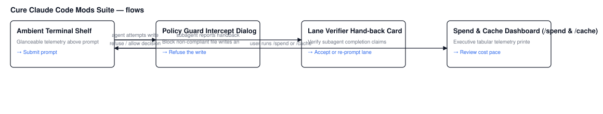

Unified Cockpit & 15 Mod Catalog
Live simulation showing how all Cure mods compose gracefully without vertical overflow or visual collision.
cure-policy-guard v0.2.0
Fail-closed house rule write interception modal and persistent compliance audit trail.
cure-secret-scrub v0.1.0
In-flight redaction of API keys, PEM private keys, AWS credentials, and tokens before entering context.
cure-egress-guard v0.1.0
Blocks unauthorized outbound data transmission to external AI endpoints in PHI & minors repositories.
cure-claim-guard v0.1.0
Enforces DistrictZero state-targets.md multi-machine row claims to prevent cross-machine collisions.
cure-spend-band v0.2.0
Non-jittering daily GitHub Actions burn and monthly $300 allowance pacing warning.
cure-cache-band v0.2.0
Visualizes Anthropic prompt cache TTL countdown, hit rates, and cold-start write penalty fees.
cure-llm-ledger v0.1.0
Per-turn LLM token and dollar cost ledger attributed by repo, branch, and model family.
cure-ci-preview v0.1.0
Pre-push GitHub Actions runner matrix time and cost estimator; warns on mixed doc/code commits.
cure-lane-verifier v0.2.0
Audits autonomous agent completions against ground-truth git mutations; flags empty branches.
cure-lane-board v0.1.0
Multi-lane terminal dashboard for tri-lane worktrees, active branches, live commits, and defect status.
cure-agent-budget v0.1.0
Enforces subagent fan-out concurrency caps and auto-routes read-only research from Opus to Sonnet.
cure-cite-check v0.1.0
Verifies code line citations (file:line) in assistant answers against disk, flagging stale lines.
cure-handoff v0.1.0
Drafts structured STATE.md handoff blocks from git commits, branch status, and working tree diffs.
cure-rules-band v0.1.0
Displays repository house rules and legal constraints in a HUD banner above the prompt.
cure-image-viewer v0.2.0
Inline terminal graphics previews via Kitty protocol with structured Unicode card fallbacks.
Current vs. Proposed Enhancements Review
Historical side-by-side design evolution that led to the v0.2.0 release and the 10 candidate mods.
📋 Stakeholder Sign-Off & Production Deployment Record
All 6 enhancements and all 10 candidate mods from IDEAS.md have been signed off, implemented with zero pip dependencies, validated, and deployed to GitHub Marketplace.
Consuming projects can install via:
/plugin install <mod-name>@cure
cure-secret-scrub Specifications
Intercepts Read, Grep, and Bash outputs in-flight to redact API credentials before entering model context.
STRIPE_SECRET_KEY=[REDACTED:stripe_sk_live]
GEMINI_API_KEY=[REDACTED:google_gemini_key]
OPENAI_API_KEY=[REDACTED:openai_sk_proj]
PORT=8080
NODE_ENV=production
cure-llm-ledger Specifications
Atomic per-turn token and dollar cost ledger attributed by repo, branch, and model family.
cure-cite-check Specifications
Verifies file:line code citations in assistant answers against disk, flagging stale lines before delivery.
File: lib/auth/session.ts (68 lines total) · Range 42-58 confirmed valid.
cure-claim-guard Specifications
Enforces DistrictZero state-targets.md multi-machine row claims to prevent cross-machine collisions.
Runner ID: macbook-pro-m3 matches claimed runner for row #14.
Lease expiry: 2026-10-07 18:30 UTC. Write permitted.
cure-ci-preview Specifications
Pre-push GitHub Actions runner matrix time & cost estimator; warns when commits mix doc notes with code.
cure-agent-budget Specifications
Enforces subagent fan-out concurrency caps and auto-routes read-only research from Opus to Sonnet.
cure-egress-guard Specifications
Prevents unauthorized outbound AI vendor network transmission in sensitive repositories (PHI / minors).
Target URL: https://api.openai.com/v1/chat/completions
Violation: Unapproved third-party AI transmission from student-facing repository.
cure-rules-band Specifications
Displays repository house rules and legal/architectural constraints in an AbovePrompt HUD banner.
cure-handoff Specifications
Drafts structured STATE.md handoff blocks from git commits, branch status, and working tree diffs.
cure-lane-board Specifications
Multi-lane dashboard for tri-lane worktrees, active branches, live commits, and defect window status.
cure-policy-guard Specifications
Fail-closed house rule write interception modal and persistent compliance audit trail.
Rule: Org no-cron policy (2026-08-08)
Reason: Scheduled cron triggers cause uncontrolled runner spend and overages.
+ schedule:
+ - cron: '0 * * * *'
cure-lane-verifier Specifications
Audits subagent hand-backs against actual Git mutations to catch phantom completions.
cure-spend-band Specifications
Non-jittering daily GitHub Actions burn and monthly $300 allowance pacing warning.
cure-cache-band Specifications
Visualizes Anthropic prompt cache TTL countdown, hit rates, and cold-start token fees.
cure-image-viewer Specifications
Inline terminal graphics previews via Kitty protocol with structured Unicode card fallbacks.
Wireframes & Flow Diagrams
Generated via `wireframe.py` under `design/wireframes/`.

W3C DTCG Design Tokens & Contrast Validation
Linted with `tokens_lint.py` (0 errors) and verified with `contrast_check.py` (24/24 passing pairs).
| Token Name | Type | Light Mode Value | Dark Mode Value | WCAG 2.2 AA Contrast |
|---|---|---|---|---|
semantic.color.text.primary |
color | #020617 (Black) | #FFFFFF (White) | 20.17 : 1 (Passes AAA) |
semantic.color.text.secondary |
color | #334155 (Gray-700) | #CBD5E1 (Gray-300) | 13.59 : 1 (Passes AAA) |
semantic.color.brand.primary |
color | #1D4ED8 (Blue-700) | #60A5FA (Blue-400) | 6.70 : 1 (Passes AA) |
semantic.color.status.success |
color | #15803D (Green-700) | #4ADE80 (Green-400) | 5.82 : 1 (Passes AA) |
semantic.color.status.warning |
color | #B45309 (Amber-700) | #FBBF24 (Amber-400) | 5.14 : 1 (Passes AA) |
semantic.color.status.error |
color | #B91C1C (Red-700) | #F87171 (Red-400) | 5.41 : 1 (Passes AA) |